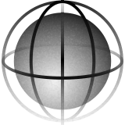
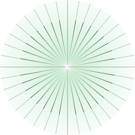
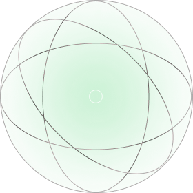
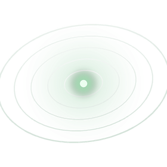
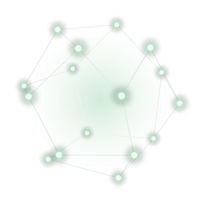
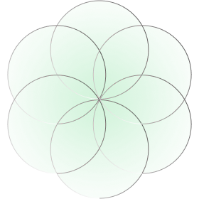

Asia Market Execution아시아 진출 실행
Asia-first execution is our priority.
We read local markets faster than anyone.
From strategy to settlement, we execute on the ground.퍼스트마케팅컴퍼니는 아시아 진출 실행을 가장 먼저 생각합니다.
현지 시장의 변화를 빠르게 읽어 고객과 함께 성장할 방법을 찾아냅니다.
전략부터 정착까지 현지에서 직접 실행합니다.

아시아 직접 실행
대행이 아니라 실행입니다. 호치민·대련·방콕·양곤 로컬 법인에서 직접 프로젝트를 수행합니다.
AI 혁신
AI 데이터 분석, AI 콘텐츠 제작, 업무 자동화를 마케팅 실무에 결합했습니다. 14년의 글로벌 경험 위에 AI를 더합니다.
내부 전문 인력
글로벌 마케팅, 디자인, 콘텐츠, AI 개발, 현지 운영, 프로젝트 관리까지 6개 직군의 전문 인력이 내부에 있습니다.
Core Value
FIRST핵심가치 FIRST
Five principles behind how we enter and win Asian markets.
One team, executing on the ground.아시아 시장에 먼저 들어가 결과를 만드는
퍼스트마케팅컴퍼니의 다섯 가지 원칙
First-mover
시장선점
아시아 시장에 먼저 들어가
기회를 선점합니다.

In-market
현지실행
대행이 아니라 현지 거점에서
직접 실행합니다.

Result
결과중심
제안서보다 결과물로
증명합니다.

Smart
AI활용
AI를 실무에 결합해 속도와
효율을 만듭니다.

Together
동반성장
고객이 현지에 정착할 때까지
함께합니다.

Tell us your target market and goals.
We will design the execution.
진출하려는 국가와 사업 목표만 알려주세요.
필요한 실행은 저희가 설계해서 답변드립니다.